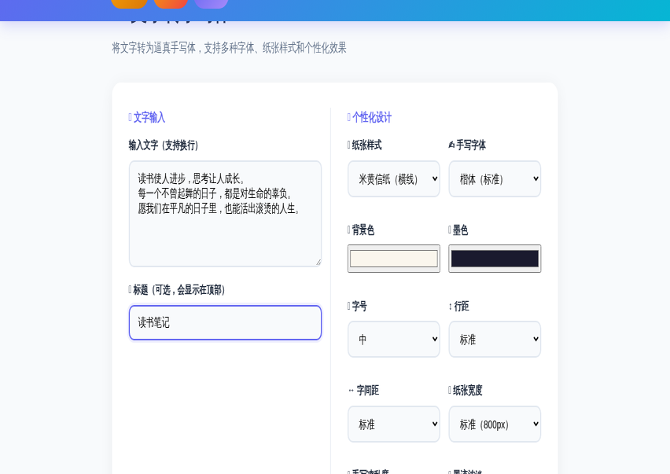
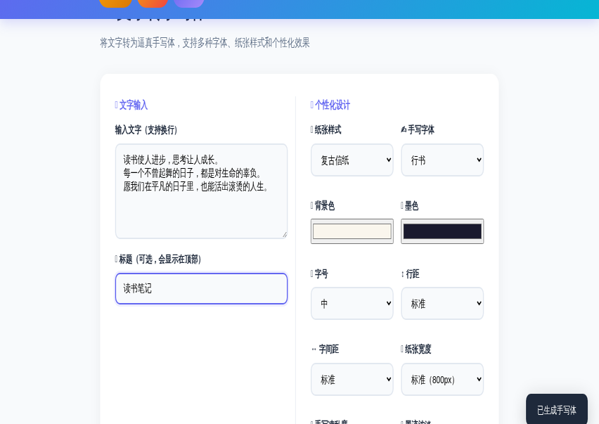

作业要求"手写版"？想交一份像样的读书笔记？或者只是怀念那笔带着温度的字迹？——打出来的字千篇一律，手写的字又怕拿不出手。
在线文字转手写体 帮你解决：把任何电子文字一键变成逼真的手写笔记。支持 8 种纸张样式（米黄信纸、方格纸、作文纸、田字格、拼音格、英文四线格、复古信纸、纯色背景）和多种手写字体，可加标题、调颜色，生成后一键下载图片，完全免费、纯本地处理。
进入 ToolBox 首页，点击「图片处理」分类，找到「文字转手写体」；或者点击下方按钮快速进入。
在左侧「文字输入」区域粘贴或输入你的内容（每行一个自然段），可选填一个标题（会显示在笔记顶部，如"读书笔记"）。

在右侧「个性化设计」区自由搭配：
| 纸张样式 | 特点 | 适用场景 |
|---|---|---|
| 米黄信纸（横线） | 经典信纸，护眼米黄 | 读书笔记、日记、书信 |
| 方格纸 | 规整方格 | 数学作业、练字 |
| 作文纸 | 大字格 + 字数标记 | 作文、周记、作业 |
| 田字格 | 标准田字格 | 汉字练写、小学作业 |
| 拼音格 | 四线三格 + 田字 | 拼音学习、低年级 |
| 英文四线格 | 标准四线三格 | 英文书写作业 |
| 复古信纸 | 仿古底纹 + 斑驳质感 | 文艺手账、情书、朋友圈 |
| 纯色背景 | 干净素雅 | 便签、PPT 素材 |
手写字体可选：楷体（标准）、行书、草书、手写体、仿宋、隶书、轻松手写等。切换后右侧预览立即刷新。

调整满意后，点击「⬇️ 下载图片」，手写笔记会以 PNG 图片保存到电脑。可以直接打印、插入文档、发朋友圈或交作业。
手写笔记能用在哪些地方？这里列举最常见的几个：
Q：能生成多少字？会收费吗？
不限字数、完全免费。内容较多时建议分段生成更清晰。所有处理在浏览器本地完成，不会上传。
Q：下载的是什么格式？能打印吗？
下载为高清 PNG 图片，可直接打印 A4 或插入 Word/PDF，也可发到手机分享。
Q：字体和纸张能自己搭配吗？
可以自由组合：8 种纸张 × 多款手写字体任意搭配，标题、颜色也都能调，右侧实时预览。
📌 还没试过？现在就把电子文字变成手写笔记吧
✍️ 去生成手写体 →